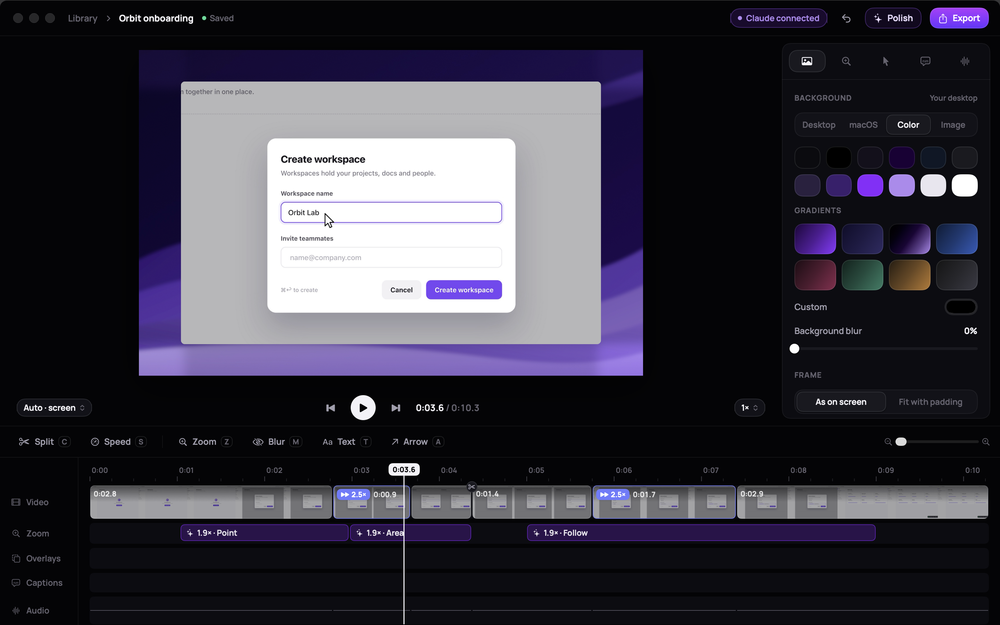
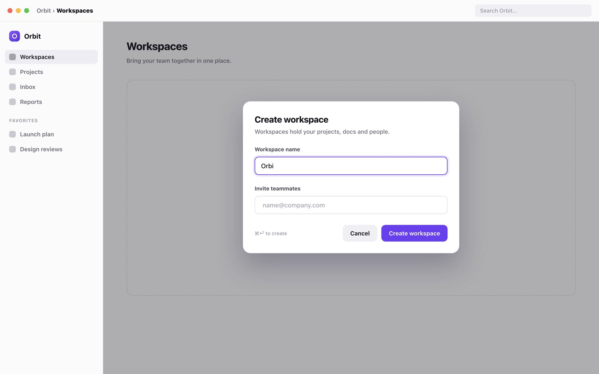
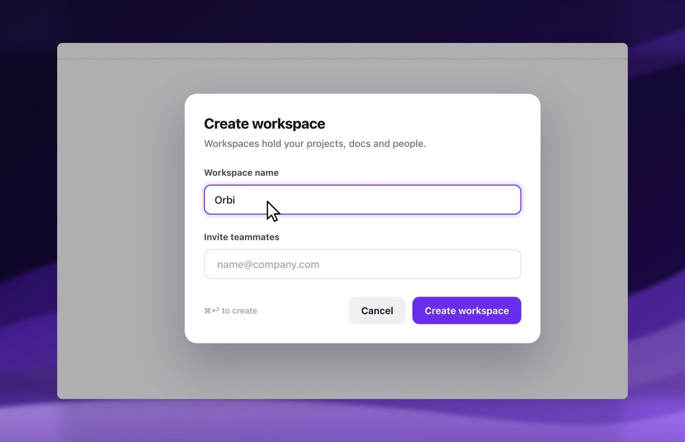
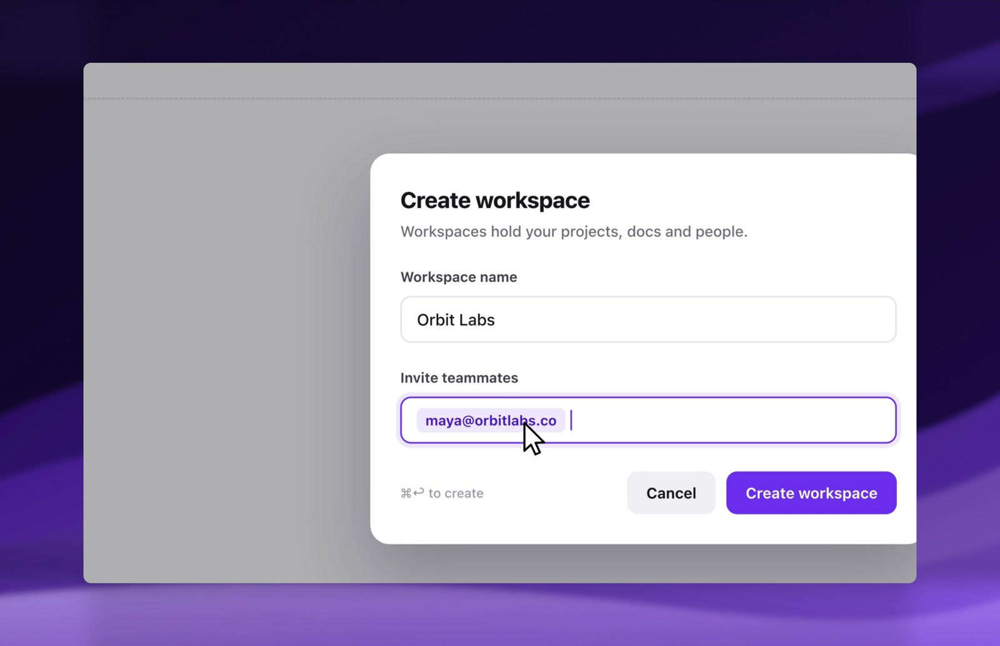
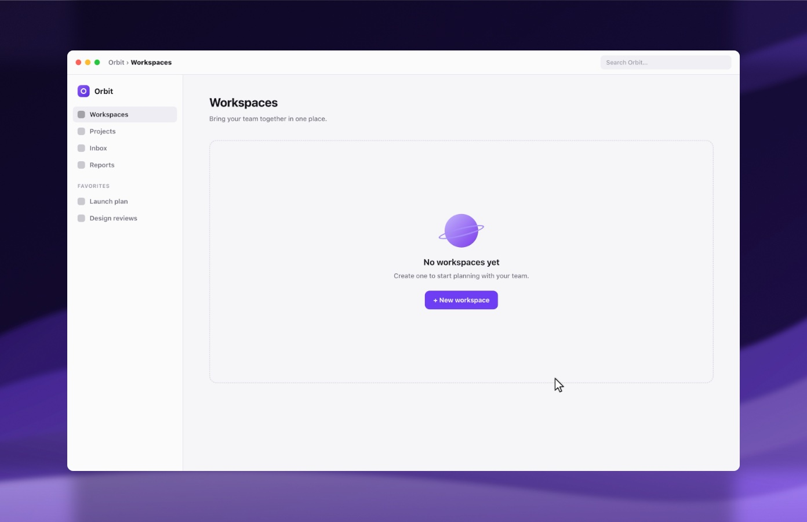

Record your Mac. Polish adds the zooms, cuts the dead air and smooths the cursor in one click.

Scroll to run it. Clicks become zooms, typing gets framed and sped up, and the pauses disappear.


Scroll to run it. Clicks become zooms, typing gets framed and sped up, and the pauses disappear.

Nebula keeps the wallpaper that was behind your window, and the window keeps its real size.

As on screen. Window recordings sit at their true size on a frame shaped like your display.
Fit with padding. Or fill the frame, with rounded corners and a soft shadow.
Any shape. 16:9, 9:16, 1:1 or 4:5. Zooms keep the action in frame.